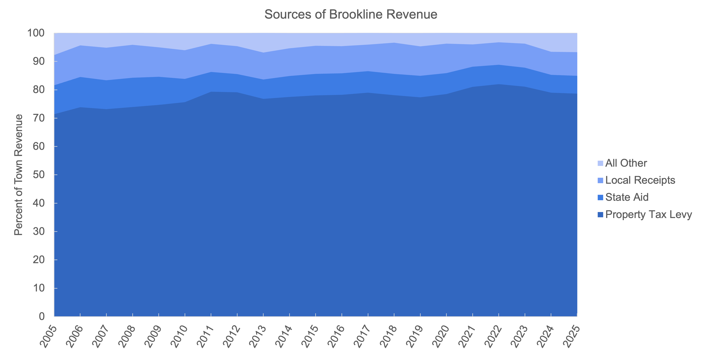
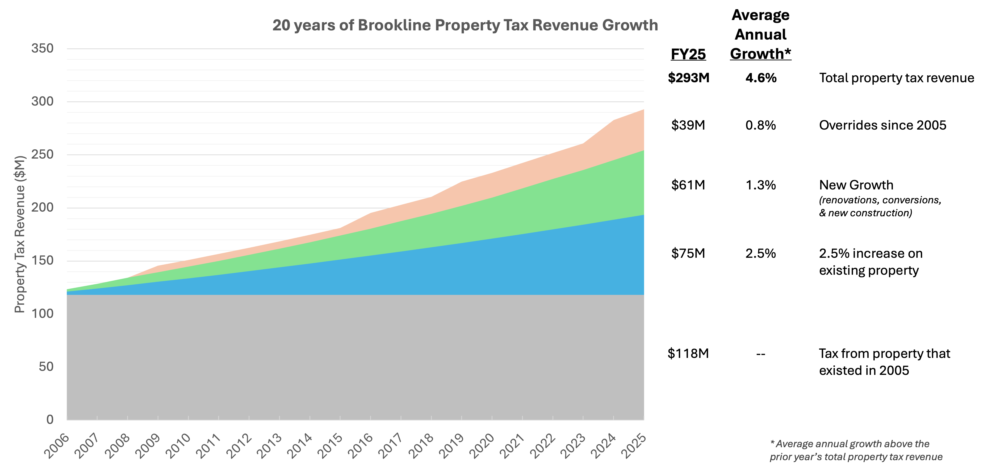
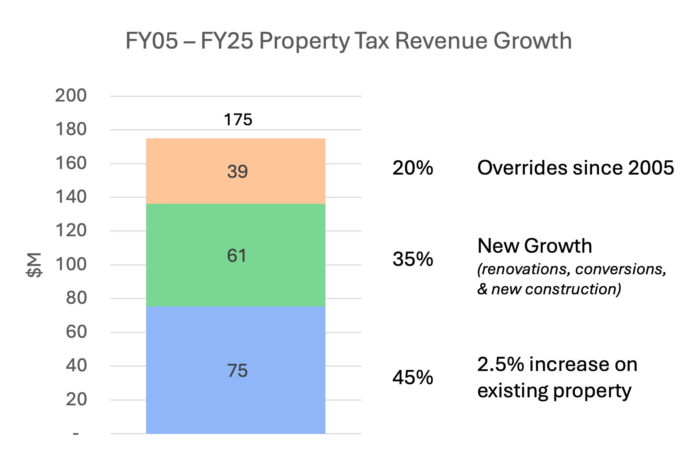
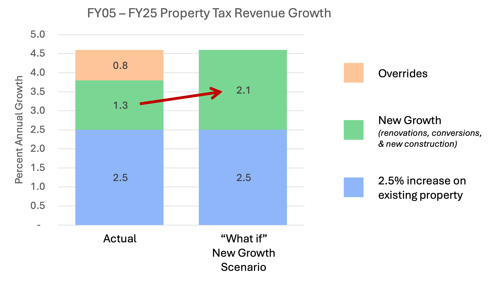
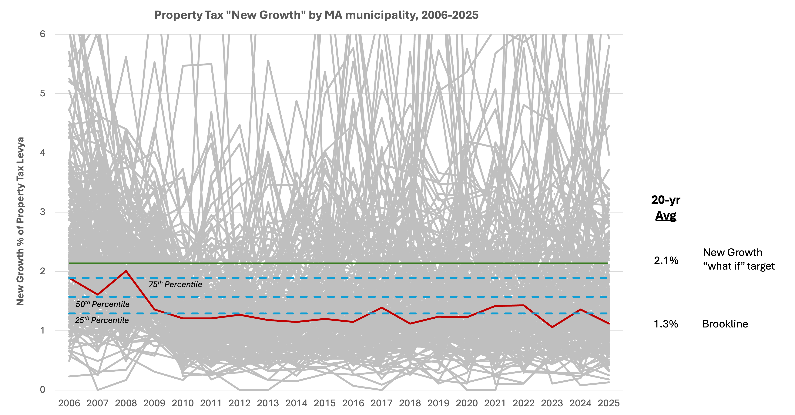
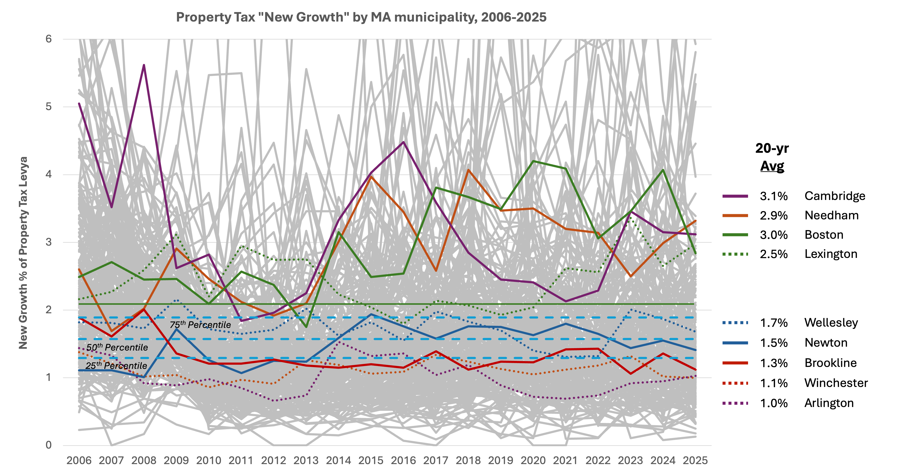
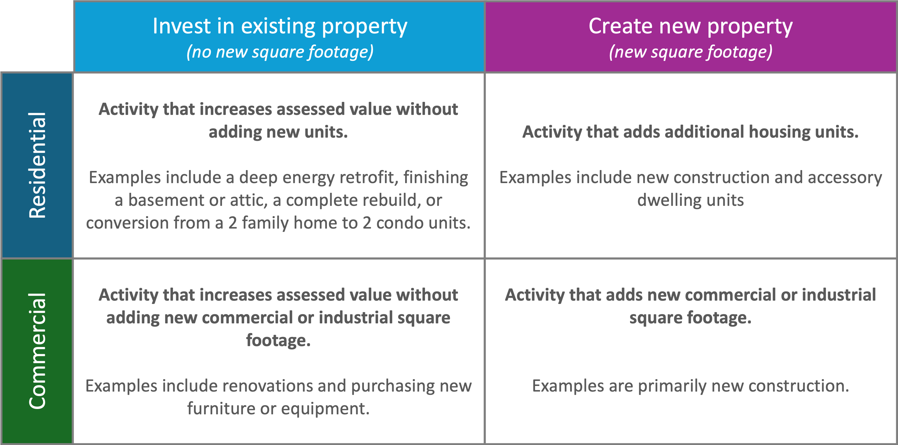
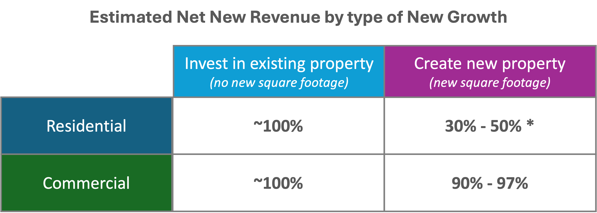
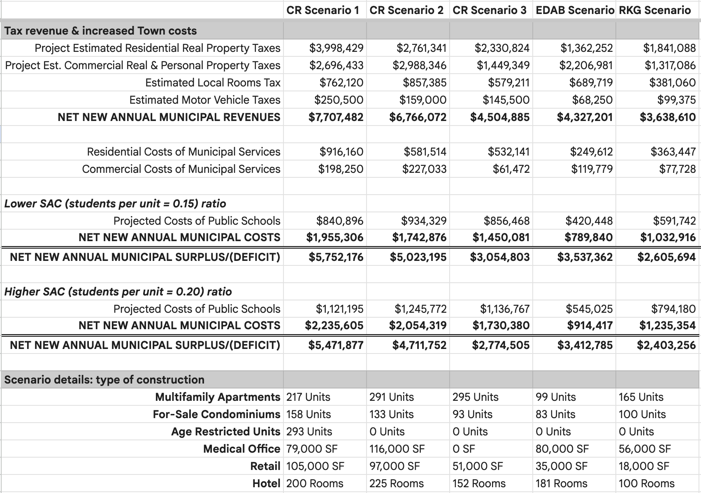

Construction is great for our Town’s finances and reduces future taxes for existing property owners. Increasing construction-based property tax growth from 1.3% to 2.1% per year would have likely avoided all overrides from 2005 - 2025.
Property tax makes up ~80% of Brookline’s General Fund revenue, which funds almost all Town services. In 2005 property tax revenue was $118M (footnote 1) and has grown 4.6% per year for the last 20 years to $293M in 2025. I became curious about what drove this growth of $175M in tax, and what follows are some of my learnings. A quick summary:
$75M of the increased tax revenue, or ~45%, is 2.5% annual growth on property that existed in 2005
$61M, or 35%, is from construction, classified as the “new growth” of property renovations, conversions, or new construction (average ~1.3% annual growth)
$39M, or 20%, is from overrides that Town voters have approved
If “new growth” had been ~2.1% instead of 1.3% we likely wouldn’t have needed the 4 overrides from 2005 - 2025. This growth would be at the ~80th percentile among all 351 Massachusetts municipalities over the last 20 years. A way to get to 2.1% growth would have been:
Streamline property renovation. ~80% of Brookline’s new growth has been investment in existing property, and even a modest increase would have given us ~1.3% of the needed annual growth. Plus this wouldn't have increased Town costs so 100% could be used to fund the budget.
Encourage new commercial & mixed-use development. The remaining 0.8% annual growth could have come from minor projects and large investments. For example, Chestnut Hill Commercial Area on Route 9 is expected to contribute ~$7M of gross property tax revenue, enough to fund ~4 years (footnote 2) of the needed additional “new growth”.
Embrace the financial benefit of new housing. Contrary to the (somewhat) common belief, new housing units are, in aggregate, net positive to Town finances. For every $1.00 in additional residential tax revenue, Town expenses increase by $0.50 to $0.70 (footnote 3). The remaining $0.30 - $0.50 can be used to fund the general Town budget. We should create an open-source fiscal impact model to collectively better understand the benefits and costs of new housing.
A next step is to take this logic and look forward, asking what new growth would be required to have avoided the 2026 override, and what new growth could fund our Town sustainably long into the future.
I’d love to have a conversation with folks in Town about how to create an annual New Growth target that would set Brookline on a path to financial sustainability. Please reach out to ben(at)brooklinefuture.org with your thoughts & suggestions.
Read on for the full story (15 to 30 min reading time), or skip to a section:
Property tax has consistently been 70-80% of our Town’s General Fund revenue for the past 20 years.

For tax purposes there are a few types of property as defined by the Town’s Assessor’s Office: real estate (residential, commercial, & industrial) and personal property (which is primarily business and professional furnishings in commercial or industrial buildings). Brookline chooses to tax residential real estate at ~1.0% of assessed value, while commercial, industrial, and personal property is taxed at ~1.7% of assessed value.
Growth in property tax revenue is defined by MA Prop 2.5, passed in 1980:
2.5% increase limit: total property tax revenue from existing properties may not increase more than 2.5% per year
New Growth: renovation, conversion, or new construction that adds to the Town’s property value can expand total tax revenue growth above the 2.5% limit
Overrides: voter approved, one-time adjustments that allow property tax to increase more than 2.5% in a single or multiple years. No use of funds is specified by voters, and future 2.5% increases are calculated on this new, higher tax base
Debt Exclusions: voter approved property tax increase that is directly allocated to repay debt used for construction or renovation of Town property. Expires when the debt is repaid, i.e., it does not permanently increase the tax base. Note that for this analysis debt exclusions are ignored because the funds cannot be used for general purposes, i.e., they can’t help us avoid future overrides.
Prop 2.5 also means that changes to the assessed value of existing, non-renovated properties do not affect the total amount of property tax the Town collects - the total Town tax revenue on existing properties can only go up 2.5% regardless of changes in assessed value. Therefore, for this analysis, I assume the assessed value of all properties increases the same percentage each year. See the footnote for more details (footnote 4).
In 2005 Brookline’s property tax revenue, without debt exclusions, was $118M. Historical town reports (see sources tab in this spreadsheet) provide each year’s tax increase due to the standard 2.5% increase, new growth, and overrides. I then separated revenue growth into categories (see the calculation tab of the previously linked spreadsheet):
2.5% increase on existing property: taxable property that existed in 2005 is limited by Prop 2.5 to 2.5% tax increase per year. $118M with 2.5% increases compounded over 20 years results in $75M of increased property tax revenue.
New growth: this category captures the full tax contribution from any new property value added by renovation, conversion, or new construction after 2005. After entering the tax base this new property value also received the 2.5% annual increase from Prop 2.5. Across the last 20 years tax from new growth has averaged ~1.3% of the previous year's total property tax, resulting in $61M total tax revenue growth.
Overrides: Brookline residents voted to permanently increase the tax base (levy) 4 times from 2005 - 2025 with the actual overrides totaling $32M. These permanent increases also received the 2.5% annual increase from Prop 2.5, resulting in $39M total tax revenue growth.


I was surprised to see the relatively large portion that New Growth contributed to the expansion of our property tax revenue. 35% of revenue growth came from a relatively modest amount of renovation and construction, almost double the amount from overrides and approaching the amount from the standard 2.5% increase on existing property.
Prop 2.5 limits our revenue growth, and we’re left relying on a combination of Overrides or New Growth from renovations, conversions, and new construction. Could we have avoided all Overrides from 2005 - 2025 if New Growth had been higher?
Overrides contributed, on average, 0.8% of annual property tax growth (see Figure 2 above). To replace it we would have needed the same amount of additional New Growth (footnote 5), increasing New Growth from 1.3% to 2.1% annually.

I didn’t have any intuition whether increasing New Growth from 1.3% to 2.1% is feasible, so I started looking at New Growth in the 350 other municipalities in Massachusetts. As you can imagine New Growth varies quite a bit year to year and town to town - you can see all 351 municipalities in Figure 5 below.

Brookline’s 1.3% annual New Growth falls right around the 25th percentile, meaning 75% of MA municipalities have more growth than us. The 2.1% “what if” scenario target is right around the 80th percentile. This is high, but seems feasible. Maybe looking at comparable communities can give us more guidance.

Brookline falls towards the bottom of this peer set in terms of New Growth. A few neighboring communities - Cambridge, Needham, Boston, and Lexington - have all averaged New Growth above 2.5% per year, which would have been more than adequate for Brookline to avoid all 4 overrides.
So if achieving New Growth greater than 2.1% annually is feasible, at least in theory, are there types of New Growth that are better than others for Town finances?
First, here’s a quick framework that helped me think about the types of New Growth, especially as they relate to Town expenses. Residential and Commercial (including industrial & personal property as defined above) properties both require basic Town services (infrastructure, safety, etc). Only Residential properties use other services - school is the largest one, but also libraries and parks. New Growth can also be separated into investment in existing property, which shouldn’t increase Town expenses because no new residents or commercial buildings are added, and investment that creates new property which does increase Town expenses.

From a first principles perspective the best New Growth for Town finances is any growth that adds zero or minimal new expenses to the Town’s budget. Investment in existing property, without adding new housing units or new commercial square footage, is therefore the best for Town finances as it increases Town revenue without adding expenses. The net new revenue (new revenue minus new expenses) to fund Brookline’s general budget from investment in existing property is ~100%.
To find the net new revenue ratio for new property creation requires a fairly in-depth exercise of splitting Town expenses between fixed (costs that won’t increase with new property to serve) and variable (costs that will increase with new property to serve), and then determining how much the variable costs will increase with each new residential unit or commercial building. Thankfully, the Town recently went through this exercise for the Chestnut Hill Commercial Area rezoning study. The 2026 ERSC Final Study (link) includes fiscal impact model methodology (pages 529-549) and estimates (pages 550-555) for tax revenue and Town expenses from RKG, a third party consultant hired to do the work. See the end of this article for a table summarizing their findings, or see the Fiscal Impact Model tab of this spreadsheet, in which I synthesized their findings into one spreadsheet.
Across 5 different scenarios the fiscal impact model predicts residential new property will have a 30-50% net new revenue ratio, and commercial new property will have a 90-97% net new revenue ratio. The residential net new revenue may vary beyond this range depending on composition & location.

While all New Growth has a net positive impact on Town financials (according to this analysis), from a purely financial perspective we should prioritize:
Investment in existing property that doesn’t add new housing units or commercial square footage (left column, 100% net new revenue).
Construction of new commercial property (lower right box, 90-97% net new revenue).
Construction of new residential property, especially when it encourages the two forms above through mixed-used developments that add vibrancy and increase overall investment activity in the neighborhood (upper right box, 30-50% net new revenue, depending on composition).
Note that this exercise doesn’t address affordability of housing - that will need to be covered in a future post.
Now that we know 2.1% annual New Growth is feasible and what types of New Growth to prioritize we can start to think about how we might have increased Brookline’s New Growth from 1.3% to (at least) 2.1% in the pursuit of financial sustainability.
As a place to start I thought it would be useful to know the composition of Brookline’s past New Growth. Massachusett’s DLS (link) reports the split between commercial and residential new growth per year. The ratio varies year-to-year from roughly 55-85% residential, with an average of 70% of New Growth from residential over the last 20 years.
Getting to the split between investment in existing property and creation of new property was a bit trickier - as far as I can tell there is neither data nor an official methodology to do this. During research I spoke with Alex at Brookline’s Assessors Office who was very helpful. After the discussion I concluded the easiest method to identify new property is to leverage the annual assessor’s data of each Brookline property parcel (link). If we compare parcels year-to-year we can look for indications of new property:
Parcels with an increase in the number of housing units
New parcels with residential or commercial property that didn’t result from conversions
Parcels that transition from vacant land to new property
The parcel-by-parcel data necessary to perform the above analysis (residential units and use description per parcel) only begins appearing in FY17. Since FY17 Brookline has roughly seen 80% of New Growth come from investment in existing property (1.05% of the 1.3% average annual New Growth), and 20% from creation of new property (0.25%).
At the risk of stating the obvious, I see two conclusions from this. One: that New Growth historically has been a major positive contributor to Town finances due to it primarily being investment in existing property. Two: that Brookline has historically seen a very low rate of new property creation: 20% of 1.3% growth is ~0.25% annual new property growth.
I think now we have enough information to take a crack at creating a possible scenario to get from 1.3% to 2.1% annual New Growth:
The biggest levers to do this are streamlining the permit process and communicating widely that we welcome investment in our Town’s existing property. 1.3% New Growth from investment in existing property seems reasonable - this matches the oft-cited rule of thumb that a property owner should set aside 1-3% of the property value each year for annual maintenance & renovation. 4% is sometimes recommended for older homes, like much of the houses in Brookline. Perhaps as a community we can strive to maintain our existing property via 1-3% investment per year.
The remaining growth can come from minor projects and large investments. Construction that creates new property has historically been ~20% of the Town’s 1.3% New Growth, or ~0.25% annually. Let’s assume that this “baseline” 0.25% rate of new construction remains.
Over a short-term timeline the remaining 0.55% gap needs to be filled by projects that take a short-time (less than 2 years, perhaps) from start to finish. Therefore encouraging investment in existing property via renovation is the best short-term option.
Over a long-term timeline this 0.55% growth gap can be filled by major projects. In dollar terms, using FY2026 expected property tax revenue of ~$300M (not including debt exclusions), this is ~$1.7M of new tax revenue per year. A major project such as the Chestnut Hill Commercial Area on Route 9 is expected to contribute ~$7M of gross property tax revenue per year (see Town estimates in the table at the end of this article). Therefore, all else being equal, a large project like the Chestnut Hill Commercial Area could have fulfilled ~4 full years ($1.7M x 4 = $6.8M) of the needed additional New Growth from new construction. This assumes a major project would be mostly commercial property, or some other combination that generates high net new revenue.
I’ve only lived in Brookline for a little under 2 years but I’m already becoming familiar with the many calculators, assumptions, and opinions that have gone into estimating the Town fiscal impact of new housing construction. As shown above the latest estimates for Chestnut Hill Commercial Area are that new housing is a net benefit to Town Finances, but past analyses have concluded other housing projects would be a net cost. Note that for this discussion I’m focusing on finances only and will temporarily set aside other important considerations, like neighborhood input, parking, traffic, etc. - those are for another article.
I’d love to see us collectively create an open-source Brookline Fiscal Impact Model that we can all use collaboratively to ground debate and discussion in a common set of facts and assumptions. This tool could be used by Town officials, developers, and residents to better inform us on whether any new housing proposal is a net benefit, or a net cost, to Town finances.
Unfortunately the model created by RKG for the Chestnut Hill Commercial Area is not available for public use. I have spoken with several talented, passionate folks who already have solid drafts of an open-source Brookline Fiscal Impact Model. Please reach out if you’d like to contribute to its development.
I’ve enjoyed this exercise of finding a way to replace the overrides from 2005 - 2025 with New Growth. It’s given me a foundational understanding of how New Growth impacts Town finances, and I’m looking forward to applying this to find what New Growth would be required to have avoided the 2026 override, and what New Growth could fund our Town sustainably long into the future. This will also require taking a deep look at Town expenses to determine how we can match their growth to expected revenue growth.
I’ve heard many express a desire to repeal Prop 2.5 to allow greater annual increases in taxes to existing property. While this could solve our revenue problems I’m hesitant to make this our primary plan for Brookline financial sustainability because:
Getting this done isn’t in our control. It requires either the state legislature or a MA ballot initiative, or both (I'm not sure)
I worry repealing Prop 2.5 without some cap on annual increases would allow elected officials to raise taxes as much as they like - a situation very different from our current state, but one that would also cause problems and discontent
At heart I'm an optimist. I believe we can work together to find a solution to fund everything about our Town that we love - the walkability, schools, safety, parks, and community - without having to continually go back to existing property owners to pay more via overrides. Welcoming investment into our community can maintain what we have and add new vibrancy to our neighborhoods, all while contributing significantly to Town services.
Appendix

Footnotes
These figures include overrides but do not include growth from debt exclusions. Each of those terms is defined in the “20-year History” section (link back to your place in the article)
New development needs to generate 0.8% growth per year. If the existing average new construction continues at ~0.25%, then large projects need to contribute 0.55%. Our FY2026 property tax levy (w/o debt exclusions) is $300M, and 0.55% of that is $1.7M. Large projects like the Chestnut Hill Commercial Area’s $7M gross tax revenue could have covered 4 years of needed additional revenue, assuming they are mostly commercial property or some other high net new revenue mixed development. (link back to your place in the article)
Per the Fiscal Impact Model estimates of RKG, a 3rd party consultant hired by the Town to evaluate the Chestnut Hill Commercial Area. See pages 551-555 of the Spring 2026 ERSC final report https://www.brooklinema.gov/DocumentCenter/View/61986/ERSC-Final-Report (link back to your place in the article)
Changes in assessed value affects property tax rates, not the overall amount of property tax revenue. A simplified version of the annual process looks something like this:
Total property tax revenue allowed under Prop 2.5 is calculated by taking last year’s revenue and increasing by 2.5%
The assessed value of all property is updated based on latest market values
The total tax revenue (step a) is divided by the total assessed value (step b) to arrive at the property tax rate (typically around 1% for residential and 1.7% for commercial)
These rates are then applied to the new assessed value of any new growth property (renovations, conversions, or new construction)
If your property’s assessed value increases more than your neighbor’s, then your property tax will also increase more. This doesn’t change the Town’s total tax revenue, however. (link back to your place in the article)
To keep things easy I’ll make a few simplifying assumptions. First I’ll assume a constant average growth rate - this is mostly true, but Brookline’s revenue growth has varied a bit year to year. Second, I’ll assume that property tax from new growth is comparable to overrides. This is also mostly true if the additional New Growth comes from renovations and conversions (of which the vast majority don’t add new housing units or commercial square footage) or commercial property (where additional Town expenses are minimal). See the section “Does all New Growth have the same financial impact?” for more detail (link back to your place in the article)